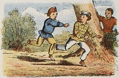

История игрешек
Воссоздавая реальные и воображаемые предметы, образы, игрушка
служитцелям умственного, нравственного, эстетического и физического
воспитания ребёнка, помогая ему познавать окружающий мир.
приучая к целенаправленной, осмысленной деятельности и способствуя развитию
Игрушка широко используется в учебно-воспитательной работе с детьми, в частности для развития технического и художественного творчества . Типы, характер, содержание и оформление игрушки определяются конкретными воспитательными задачами применительно к возрасту детей с учётом их развития и интересов. Как произведения декоративно-прикладного искусства игрушки, особенно национально-традиционные, используются в качестве декоративных элементов в современном интерьере.
-
Детские игры
-
Игры с водящим
-
Жмурки -водящий ловит других игроков с завязанными глазами, пока не поймает другого игрока, который становится водящим.
-
Прятки -игроки прячутся, а водящий должен их искать, пока не найдёт всех.
-

Салочки -водящий гоняется за другими игроками, пока не коснётся другого человека, который в свою очередь становится водящим.
-
- Игры с предметами
- Игры на эрудицию
-
Игры с водящим
-
детское творчество
-
Виды детского творчества
- Художественное творчество
- Изобразительное детское творчество
- Литературное детское творчество
- Техническое детское творчество
- Музыкальное детское творчество
-
Виды детского творчества

История игрушки
Игрушки известны человечеству с глубокой древности, они были обнаружены археологами при раскопках остатков древних цивилизаций. Игрушки, найденные при раскопках Индской цивилизации (3000—1500 до н. э.) включают маленькие повозки, свистки в виде птиц и игрушечных обезьянок, которые могут сползать по верёвке.
Самые древние игрушки сделаны из доступных природных материалов, камней, палок и глины. Тысячи лет назад египетские дети играли в куклы, у которых были парики и подвижные конечности, они были сделаны из камня, керамики и дерева. В Древней Греции и Древнем Риме дети играли с куклами, сделанными из воска и терракоты, луком и стрелами, йо-йо. В Греции, когда дети, особенно девочки, достигали совершеннолетия, было принято приносить игрушки детства в жертву богам. Накануне свадьбы девушки возраста около четырнадцати лет в качестве обряда посвящения во взрослую жизнь приносили свои игрушки в храм.
Технологический прогресс цивилизации повлиял и на детские игрушки. Сегодня игрушки изготавливаются из пластмассы, появились игрушки с батарейками. Если раньше игрушки были самодельными, то сейчас существует целая индустрия игрушек с массовым производством и механизмами реализации.
Эволюцию игрушки можно проследить на примере кукол. Самые древние куклы были просто вырезаны из дерева или связаны из травы. В Древнем Египте куклы уже могли двигать конечностями. Куклы начала XX века уже умели говорить «мама». Сегодня уже существуют куклы, которые могут распознавать предметы, голос своего владельца, и выбирать фразы из сотен вариантов, заложенных в них программой. Изменились игрушки, технологии их изготовления, лишь тот факт, что дети любят с ними играть остаётся неизменным на протяжении всей истории человечества.
Лошадка на колёсах. Древняя Греция, Керамик 950—900 до н. э.
Музеи игрушек
Во многих странах открыты музеи игрушек. Первый в мире Немецкий музей игрушки был создан в 1901 году в Зоннеберге.
Классификация игрушек
По возрастному назначению
- от рождения до 1 года
- от 1 от 3 лет (в этот период начинается разделение игрушек для девочек и для мальчиков)
- от 3 лет до 5 лет
- от 5 лет до 10 лет
- от 10 лет и старше
По материалу изготовления
- Тканевые
- Соломенные
- Глиняные
- Деревянные
- Пластмассовые
- Резиновые
- Меховые
- Картонные
Пластмассовая игрушка слинки
Глиняная игрушка "кот-рыболов"
Сертификация игрушек
Постановление Правительства РФ № 1013 от 13 августа 1997 года предусматривает необходимость обязательной сертификации детских игрушек. Проводимая в отношении игрушек сертификация это оценка их с точки зрения физической безопасности для детей. В процессе сертификации проводится санитарно-эпидемиологическая экспертиза, сертификация соответствия. Игрушки проверяются более чем по ста показателям. Также инспектируется и производство игрушек, а также игрушки, уже поступившие в торговую сеть.
К детским игрушкам предъявляются следующие основные требования. Прежде всего, это безопасность материалов, из которых они изготовлены и которым покрыты. Она должна быть заверена в специальном паспорте, в котором кроме этого указывается, что материалы не являются аллергенными раздражителями и не содержат токсических химических и вредных веществ. Проверяются игрушки также на предмет наличия резкого неприятного запаха, а также оценивается цвет — слишком яркий и ядовитый цвет может оказывать негативное воздействие на психику ребёнка.
Хрупкость и ломкость игрушки учитывается наряду с наличием мелких и потенциально опасных деталей, которые могут травмировать ребёнка. Все пластиковые элементы мягких и плюшевых игрушек должны быть прочно пришиты и приклеены, чтобы избежать их проглатывания. Как и любая другая сертификация товаров на территории России, сертификация игрушек гарантирует безопасность и высокое качество. Она призвана гарантировать, что игрушка будет приносить ребёнку радость и не станет причиной неприятностей или болезней.
Сертификация игрушек, предназначенных для рынка Европейского Сообщества (Европейского Союза) несколько отличается по своей процедуре испытаний (в настоящее время опубликован проект Технического Регламента Таможенного Союза, положения проекта практически идентичны Директиве Европейского Союза по безопасности игрушек). Изготовление и оборот детской игрушки в Европейском Союзе определяет Директива 2009/48/ЕС по безопасности игрушек, которая вступила в силу 20 июля 2011 года, положение о химическом составе игрушек вступает в силу 20 июля 2013 года. Данная Директива ужесточает требования по изготовлению игрушки и ответственность за изготовление игрушек и реализацию, опасных для здоровья. Все детские игрушки, попадающие на рынок Европейского Союза должны иметь маркировку СЕ, просим не путать маркировку Китая, которая очень часто встречается на игрушках и практически не отличима от европейской маркировки СЕ[18], поставленная продукция на рынок ЕС должна соответствовать гармонизированным стандартам ЕС и Директивам ЕС.
Игрушки, представляющие повышенную опасность для ребёнка возраста до 3 лет, должны иметь предупреждения «Не подходит для детей в возрасте до 3 лет (36 месяцев)» или предупреждение в виде графики и в инструкции по применению игрушки, краткие предупреждения о опасностях, например — в игрушке используется магнит NdFeB, представляющий опасность при проглатывании.